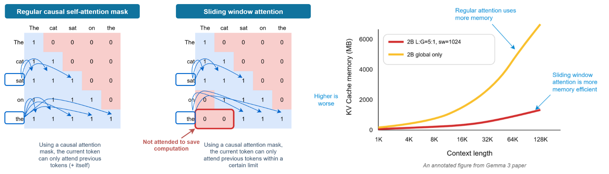
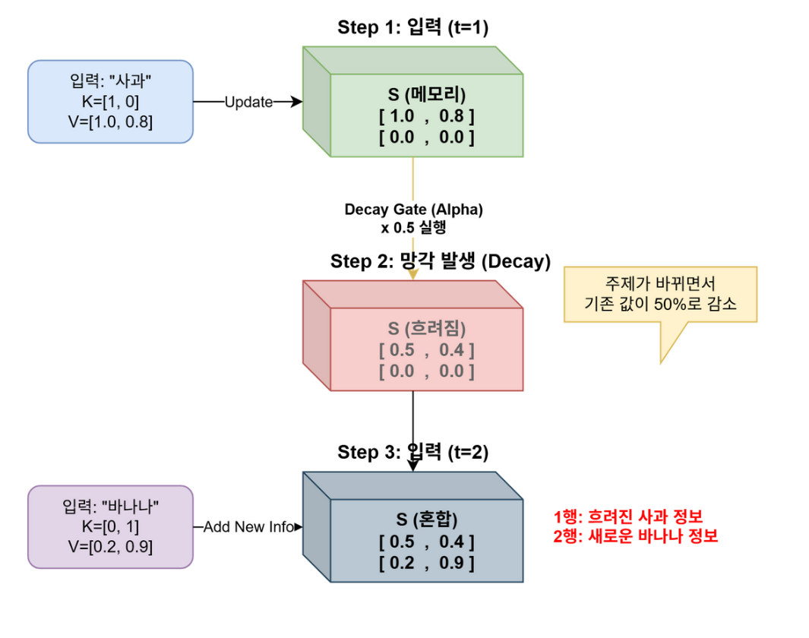

20. 효율적인 구조와 상태 갱신
이 장은 참조할 위치를 줄이는 방법, 블록 배치를 바꾸는 방법, 과거를 고정 크기 상태로 압축하는 방법, 학습 목표를 늘리는 방법을 구분한다. Q는 찾을 정보, K는 주소 역할의 특징, V는 읽을 내용이다. 행렬 곱과 causal attention을 아는 독자를 대상으로 한다. 먼저 1~3절의 작은 계산을 하고, 4절에서 저장량을 비교한 뒤 MTP의 정답 위치를 직접 써 보자. 복습할 때는 마지막 문제에서 막힌 절로 돌아간다.
학습 목표는 창 밖 정보의 한계 설명, 상태 갱신 수치 계산, hybrid의 캐시 증가 예측, MTP와 일반 생성의 차이 설명이다. 원문은 파일 순서 251~260쪽이며 세부 관찰은 각 페이지 해설에 남겼다.
1. 참조 범위를 제한하는 창
Sliding window attention
전체 과거 대신 현재 위치에서 정해진 범위만 본다. window 크기 W를 현재 위치를 포함한 참조 토큰 수라고 정의하면, 위치 t가 보는 위치는 max(0,t-W+1)…t이다. T=8, t=7, W=3이면 5·6·7만 본다. 로컬 캐시를 오래된 위치부터 제거하는 구현에서는 해당 층의 저장 길이를 W 근처로 제한할 수 있다.
장점은 참조 범위와 비용을 제한한다는 것이고, 한계는 창 밖 토큰을 그 층에서 직접 볼 수 없다는 것이다. 여러 층이나 전역 attention과의 혼합으로 정보가 전달될 수 있지만 정확한 장거리 검색이 자동 보장되지는 않는다. window가 다른 기법의 대체재인지는 목적을 따져야 한다. GQA는 head 공유, window는 참조 위치 제한이므로 함께 쓸 수 있다.
마스크에서 0인 칸이 어느 과거 위치를 지우는지 먼저 본다.

왼쪽의 삼각형은 미래 금지, 가운데의 잘린 삼각형은 먼 과거도 금지한다. 오른쪽 그래프는 가로축 Context length, 세로축 KV Cache memory (MB)이며 빨강은 2B L:G=5:1, sw=1024, 노랑은 2B global only다. 혼합 모델의 캐시가 더 천천히 증가한다는 비교이지 모든 로컬 모델의 메모리가 0이라는 뜻이 아니다.
2. 정규화 위치와 폭·깊이
원문 252쪽의 Pre-Norm은 정규화를 하위 모듈 앞에 두는 구조다. 예를 들어 y=x+Attention(Norm(x))이다. Post-Norm은 y=Norm(x+Attention(x))다. 위치는 학습 안정성·최종 정규화·초기화와 연결되므로 두 식이 같은 함수라고 볼 수 없다. 원문 253쪽의 ‘넓으면 안정적, 깊으면 유연한 사고’는 설계 직관이며 고정 예산에서의 일반 성능 법칙으로 사용하지 않는다. 폭·깊이 비교에는 파라미터 수, 학습량, 데이터, 실행 환경을 함께 고정·기록해야 한다.
원문 그림은 Original Transformer의 Post-Norm, Llama 3 8B의 Pre-Norm, OLMo 2 7B의 잔차 가지 안쪽 Post-Norm을 나란히 둔다. 마지막 것은 잔차 합 전체 뒤의 정규화와 구별해야 한다. 교육용으로 Norm을 입력을 길이 1로 만드는 함수, Attention을 2배 함수라 놓으면 x=(3,4)에서 Pre-Norm은 (4.2,5.6), Post-Norm은 (0.6,0.8)이다. 실제 LayerNorm/RMSNorm을 대체한 증명이 아니라 배치 순서가 함수에 영향을 준다는 예다.
폭은 한 토큰의 표현 차원이나 FFN 중간 차원, 깊이는 반복 블록 수다. 253쪽 도식의 Gemma 3 27B는 62블록·임베딩 5,376·FFN 21,504, Mistral 3.1 Small 24B는 40블록·임베딩 5,120·FFN 32,768로 표기되어 있다. ‘넓다’가 무엇의 폭인지 먼저 정해야 한다. 제품 사양의 최신 확인 목록이 아니라 원문 비교값이다. 블록 수만 두 배로 하면 순차 경로가 늘고, 같은 폭의 dense 블록에서 큰 행렬의 파라미터는 대략 폭의 제곱에 비례한다. 따라서 폭·깊이를 한 번에 바꾼 제품 그림만으로 사고력의 원인을 판정할 수 없다.
3. Gated DeltaNet의 기억 수정
상태와 세 gate
Full attention은 과거 K·V 목록에서 직접 정보를 읽는다. Gated DeltaNet 계열은 크기가 정해진 행렬 상태 S를 매 토큰 갱신해 과거 정보를 압축한다. 다음은 열벡터 k·v를 사용하는 핵심 갱신식의 교육용 표현이다.
기존 기억 감쇠: Sbar = α Sprev
현재 key로 예측: vhat = Sbar k
오차: e = v - vhat
기억 수정: Snew = Sbar + β e kᵀ
읽기: o = Snew q
α는 과거 기억을 얼마나 남길지, β는 현재 key에 대응하는 새 정보를 얼마나 반영할지 조절한다. 출력 gate는 읽어 낸 정보 중 무엇을 다음 층에 전달할지 조절한다. k가 단위 길이라면 β=1일 때 해당 key 방향의 예측 오차를 한 번에 수정하는 직관을 얻을 수 있다. 실제 블록의 정규화·convolution·출력 gate 등은 위 핵심식 밖에 있다. Gated Delta Networks §3
스칼라 장난감 예로 Sprev=2, α=0.5, k=1, v=3, β=0.25라 하자. Sbar=1, vhat=1, e=2이므로 Snew=1+0.25×2=1.5다. β=0이면 새 정보가 반영되지 않고 감쇠된 1만 남는다. 이는 실제 모델의 품질 측정이 아니라 gate 역할을 보이는 축소 예시다.
상태 크기를 고정하면 길이가 늘어도 해당 recurrent 상태는 선형 캐시처럼 계속 커지지 않는다. 대신 과거를 개별 토큰 형태로 모두 보존하지 않아 검색 능력에 손실이 생길 수 있다. full attention을 일부 층에 섞는 hybrid는 압축과 직접 참조를 조합한다. 전체 모델에는 full-attention 층의 캐시가 남을 수 있다.
원문 정정: 255쪽의 ‘앞뒤 1~2개 토큰을 섞는다’는 표현을 causal 생성에서 미래 토큰 참조로 해석하면 안 된다. causal short convolution은 현재와 과거의 허용된 위치만 사용한다. 254쪽의 Qwen·Kimi 제품 사례는 이 장에서 현재 구현을 확인한 목록으로 사용하지 않는다.
원문 사과 예제를 일관된 행렬로 계산하기
상태 S의 크기를 [value 차원, key 차원]으로 고정하고 모든 k,v,q는 열벡터로 쓴다. S0은 2×2 영행렬이다. α=β=1, k=(1,0), 첫 v=(0.8,0.1)이면 S1=[[0.8,0],[0.1,0]]이다. 같은 k에 v=(0.9,0.1)을 입력하면 예측은 (0.8,0.1), 오차는 (0.1,0), 수정 후 S2=[[0.9,0],[0.1,0]]이다. q=(1,0)을 읽으면 (0.9,0.1)이다. 단순 덧셈이면 첫 열이 (1.7,0.2)가 되어 ‘수정’ 대신 중복 누적된다.
정정: 256쪽 그림은 값 (0.8,0.1)을 첫 행에 배치하면서 S k와 오차 kᵀ를 쓰므로 표기 방향이 섞였다. 그림의 행 배치를 유지하려면 읽기를 Sᵀk, 갱신을 k 오차ᵀ로 바꿔야 한다. 본문은 원 논문의 열벡터 방향으로 통일했다. 또한 256쪽의 α=0(망각 안 함) 표기는 본문의 기억 유지 계수 α와 의미가 다르다. 이 자료의 Sbar=αS에서 망각 없음은 α=1이다. 숫자의 ‘빨강·둥글음’은 학습용 의미 부여이며 실제 모델 차원의 고정 의미가 아니다.
원문은 key별 기억을 행으로 그린다. 아래 그림의 행 배치를 읽은 뒤 본문의 열 배치로 전치해 보자.

사과 행 [1.0,0.8]은 [0.5,0.4]로 줄고 바나나 행 [0.2,0.9]가 생긴다. 본문 방향의 최종 S는 [[0.5,0.2],[0.4,0.9]]이다. q=(1,0)은 감쇠된 사과, q=(0,1)은 바나나를 읽는다. 두 key가 직교한다는 예제 조건 때문에 새 정보가 다른 기억을 건드리지 않는다.
4. Hybrid와 저장량의 조건
258쪽은 Linear→MoE 세 층 뒤 Full→MoE 한 층을 반복하는 3:1 패턴이다. MoE는 여러 FFN 전문가 중 일부를 선택하는 모듈이며 이 그림의 캐시 절약은 MoE 자체가 아니라 token mixer의 배치에서 나온다. 한 recurrent 층은 S 크기만 유지하고, full 층은 길이 T에 비례하는 KV를 유지한다. 전체 저장은 대략 ‘고정 recurrent 상태 + full 층 수×토큰당 KV×T’다.
예를 들어 동일 head 크기인 4층 중 한 층만 full이고 그 층의 캐시가 토큰당 1 KiB이면 T=1,024에서 1 MiB, T=2,048에서 2 MiB다. 나머지 고정 상태가 0.25 MiB라면 총 1.25→2.25 MiB다. pure full의 4→8 MiB와 비교할 수 있으나 항상 정확히 4분의 1은 아니다.
259쪽의 파랑은 Full Attention(MHA) KV cache, 주황은 All Gated DeltaNet(no conv), 초록은 3:1 layer ratio다. 가로축은 Context length(number of tokens), 세로축은 KV Cache Size(GB)다. 파랑은 약 128K에서 50GB 이상, 초록은 약 13GB, 주황은 축 규모에서 거의 수평이다. 구조 비교 도식이며 head·dtype 등 설정이 없고 convolution 상태도 제외되어 실제 제품의 측정치로 사용할 수 없다. 고정 상태는 과거 토큰 모두를 손실 없이 보존하지 않는다.
5. 여러 미래 정답으로 학습하는 MTP
**Multi-token prediction(MTP)**은 한 위치의 표현으로 다음 토큰만이 아니라 여러 미래 토큰을 예측하는 보조 학습 목표를 둔다. 원문 260쪽의 독립 head 예에서 입력 prefix가 A B이면 head1의 정답은 C, head2는 D, head3은 E다. 여러 head의 CE를 결합해 공유 본체가 여러 미래 위치에 유용한 특징을 학습하게 한다. 독립 head MTP 원 논문
교안의 단순형처럼 추론 시 보조 head를 제거하고 일반 next-token 생성만 할 수도 있다. 다만 이것이 유일한 방식은 아니다. 보조 예측을 draft로 사용하는 speculative decoding 같은 설계도 있다. 여러 토큰의 후보를 냈다고 조건부 의존성을 무시하고 검증 없이 모두 확정해도 된다는 뜻은 아니다. 보조 head 추가가 학습 비용이나 품질을 항상 개선한다는 보장도 없다.
원문 왼쪽 Shared는 공통 본체, Head1~4는 미래 위치별 출력이다. 오른쪽 MBPP Pass@1은 코딩 문제를 첫 시도로 통과한 비율이며 모델 크기별 baseline과 변화 막대가 함께 있다. 13B의 baseline 26.0에 +4.5%p면 30.5이고 상대 개선은 4.5/26≈17.3%다. 작은 0.3B·0.6B 막대는 음수다. ‘모든 크기에서 향상’으로 읽으면 안 되며 오차막대의 통계 정의는 슬라이드에 없다.
작은 활동: 문장 토큰이 [나는, 오늘, 학교에, 간다, .]일 때 ‘나는’ 위치의 네 head 정답을 적는다. 예상 결과는 오늘/학교에/간다/.이며, 네 손실을 같은 가중치로 평균할 수도 있다. head별 손실이 [1,2,3,2]라면 평균은 2다. 문장 끝에서 미래 정답이 없으면 해당 손실을 마스킹해야 한다.
6. 확인 질문과 해설
- t=7, W=3 창은 위치 3을 직접 읽는가? 해설: 5~7만 읽으므로 아니다. 1절의 창 정의를 확인한다.
- 3절 스칼라 예에서 β=1로 바꾸면? 해설: 1+(3-1)=3이다. β는 새 오차의 반영량, α는 기존 기억의 감쇠량이다.
- 3:1 hybrid는 무한 길이에서 고정 메모리인가? 해설: full 층 캐시 때문에 아니다. 4절의 고정항과 T 비례항을 분리한다.
- 네 head가 후보를 냈으면 네 토큰을 그대로 확정해도 되는가? 해설: 아니다. 학습 보조 목표와 검증을 포함하는 생성 전략은 다르다.
페이지별 원문 대조
- 251쪽: Sliding window attention — 마스크의 참조 위치와 캐시 증가
- 252쪽: 정규화 레이어 배치 — Norm이 잔차 경로의 어느 위치에 놓이는가
- 253쪽: 폭과 깊이의 선택 — 제품 그림에서 비교 축 분리
- 254쪽: Gated DeltaNet 도입 — 필터와 상태 압축
- 255쪽: 세 gate와 short convolution — Update·Decay·Output의 구별
- 256쪽: Delta rule의 수정 예 — 사과 특징을 누적하지 않고 고친다
- 257쪽: Decay gate의 감쇠 — 과거 약화와 새 정보 추가
- 258쪽: 3:1 hybrid — 층 종류를 반복 배치
- 259쪽: Hybrid의 메모리 그래프 — 기울기와 고정 상태 구별
- 260쪽: Multi-token prediction — 네 미래 정답과 모델 크기별 변화